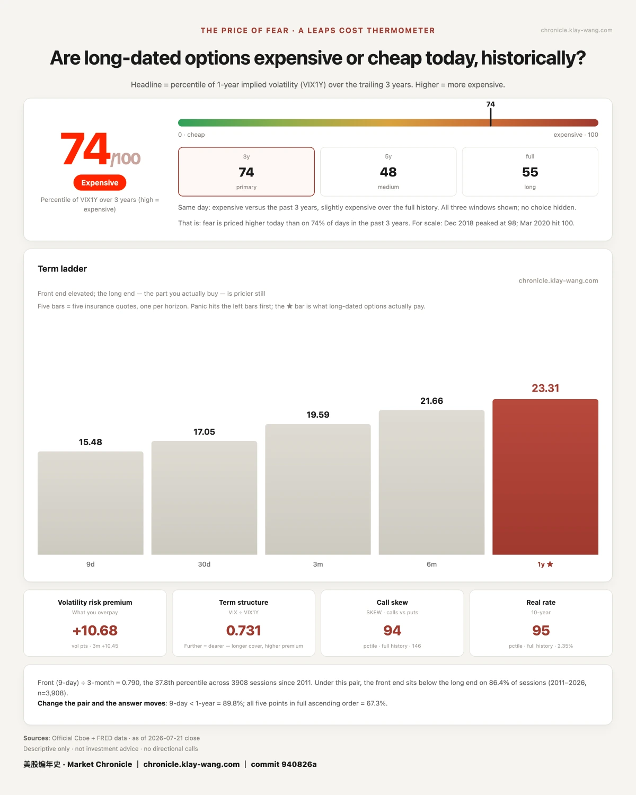

Start with yesterday's loudest table.
Micron (MU) closed +12.10% at 970. Its 970 calls expiring that same day closed +665%. One dollar in, $7.65 out, in a single session.
And it wasn't one lucky strike: every same-day call from 945 to 980 closed between +641% and +701%. The whole corridor paid out.
Whose money was it? 9,447 contracts traded against just 298 of prior open interest — over 9,000 of those were fresh money chasing in that same day. They bet right.
But the other side of the table was crowded too. MU carries the heaviest downside protection of all 13 names we track: the group's highest put open interest, stacked at the 800 put wall. Yesterday, none of it paid. Both sides of the table are real people; nobody photographs the ones who walk away with nothing.
Tonight, the next table opens: Google and Tesla report after the close.
Retail plays direction. Big money plays it differently. On Tesla's tape, someone bought both far ends at once: roughly 2,300 contracts of the late-August 420/435 calls, and about 1,600 of the 310/315 puts — all of it outside this week's implied move of ±5.62%.
Translation: a big move either way pays; a small move loses both legs. My read: this is buying volatility, not betting direction. Google looked the same — not a single naked directional trade all day, only spread pairs.
Retail guesses the direction. Professionals buy the magnitude.
One more detail: everything the market is paying for these two earnings sits in this week. The 2027 price tags didn't move at all. The short end is betting on tonight; the long end is asleep.
Scoreboard (what we publish, we come back and check): the "four-cent insurance" we wrote on 07-21 — 3,000 SPY January-2027 105 puts — showed up in the next day's open interest: 1,084 to 4,057, all held. Real positioning, not day-trading churn. The two-year QQQ 650 puts: same, all held. And SPCX — after we recorded its two-sided flow, the stock rose 3%. The sequence is real; causality left blank. One sample proves nothing.
Thermometer: the price of fear eased from 81 to 74/100. The market rose for a day, and fear came down one notch.
